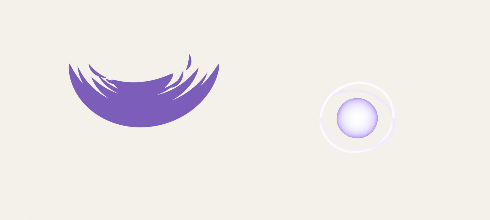

Skill Creation 1
The first ki arts in HOLLOW: two aura skills and a new look for the lit blade.
The Test Book
A test manual for building ki arts. It has two skills, each made of a gather beat and a release beat with its own animation. Neither needs the blade aura lit.
Aura Wave
Coil, then a turning sweep throws a wave of sword light. 12 qi, 1 s cooldown. It hits for 34 and breaks guard.
Each stance throws it differently, and the wave takes its angle and position from the cut that draws it:
- Heaven: blade raised in both hands, then a two-handed chop that throws an upright wave.
- Man: a turn, then a sweep that throws a flat wave.
- Earth: sink low with the blade drawn back, then a rising backhand that throws a slanted wave.
Aura Sphere
Sweep the sword back low, cup a sphere at the chest with the off hand, then drive it out with a palm strike. It's a slow, pulsing orb that bursts on the first foe it reaches. 18 qi, 48 damage. It breaks guard and knocks back.
Projectile models
Both projectiles are modelled in Blender by a script. The wave is a crescent of brush strokes. Each stroke's vertex colour marks its role (aura colour, accent, light, ink), so the game's shader paints it in the player's own aura colours. The sphere is a faceted orb with two rings. The script also builds a beam: a spear of light wrapped in a spiral ribbon.

Fire blade aura
The lit blade aura now burns. A band of flame wraps the blade and always faces the camera, with its tongues streaming back against the swing. Embers drift off it, a hot rim lines the steel, and a light flickers on whatever is near. Cuts leave a streak in the fire's colour.
Next
More skills on the same gather-and-release pattern, then the sword schools.